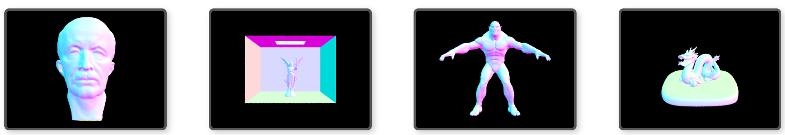
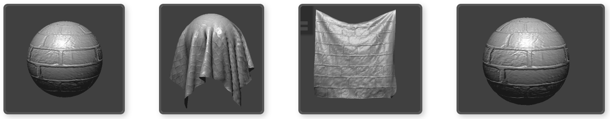
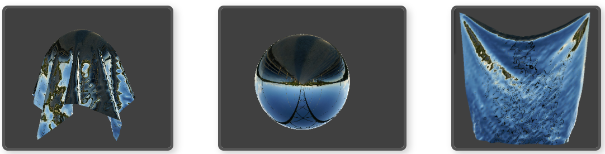
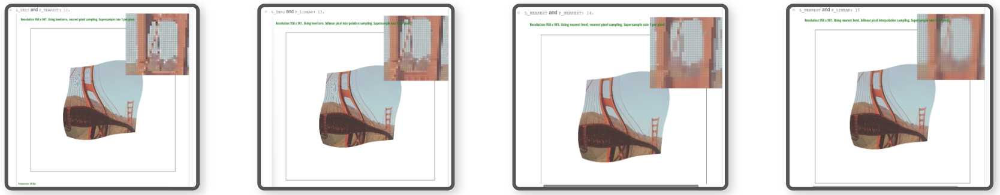

note: some of the demos of the below projects are under construction!
AlgoRacer – Real-Time Multiplayer Coding Race
Jan 2025 - Present (Personal Project)
Full-Stack Web Application – Next.js, React, TypeScript, PostgreSQL, Socket.io
Built and deployed a real-time multiplayer coding race game using Next.js, TypeScript, React, and Socket.io, allowing players to compete in typing algorithms and data structures in python.
Developed a WebSocket server to enable low-latency, real-time gameplay, managing player progress and race synchronization.
Implemented a PostgreSQL database for persistent player statistics, authentication with NextAuth.js and SMTP, and secure API routing.
Deployed on Vercel with serverless functions, leveraging auto-scaling and database management to handle traffic efficiently.
Jul 2024 - Aug 2024 (Associated with University of California, Berkeley)
CS 169A: Software Engineering– Ruby on Rails, JavaScript, HTML
Served as Scrum Master, collaborating with cross-functional team members to oversee Agile development of a Ruby on Rails application that allowed users to search for political representatives and view real-time news.
Developed key features, including building MVC components, creating UI views, handling database migrations, and integrating the Google Civic Information API for real-time data.
Employed Test-Driven Development (TDD) practices, using Cucumber/Capybara to ensure high test coverage leveraged Continuous Integration (CI) to automate the build and testing process, providing immediate feedback on code quality and integration issues..
Skills: Ruby on Rails, JavaScript, HTML, Team Management, Web Development, CI
NGram Viewer
Oct 2022 (Associated with University of California, Berkeley)
CS 61B: Data Structures – Java
Developed an object-oriented program to analyze historical word usage data, displaying frequency and relationships through an interactive user interface.
Designed and optimized graph structures and algorithms to meet run time requirements, and model relationships between words, ensuring accuracy through custom JUnit tests.
Skills: Java, Data Structures
Computer Graphics Projects
Jan 2024 - Apr 2024 (Associated with University of California, Berkeley)
CS 184: Computer Graphics – C++
Project 1: Applied foundational graphics rendering techniques like triangle rasterization, anti-aliasing, affine transformations, and texture mapping.
Project 2: Engineered surface modeling solutions using Bézier curves and mesh processing, focusing on accurate surface representation.
Project 3: Designed and optimized a path tracing algorithm to simulate realistic light interactions.
Project 4: Developed a comprehensive cloth simulation system with advanced shaders for realistic rendering.
Skills: C++, Computer Graphics




Build Your Own World
Nov 2022 - Dec 2022 (Associated with University of California, Berkeley)
CS 61B: Data Structures – Java
Created an algorithm, using Java’s StdDraw package, that pseudo-randomly generates 2D worlds of rooms connected by hallways, in collaboration with a team member.
Allowed user to input any set of numbers which the algorithm used for generation. Inputting the same number again generates the same world.
Implemented the following features: select the avatar, explore the world, save world, load previously saved world, and toggle between full and restricted vision.
Skills: Data Structures, Java
Optimized Matrix Convolution
Apr 2023 - May 2023 (Associated with University of California, Berkeley)
CS 61C: Great Ideas of Computer Architecture – C Programming
Implemented and optimized the matrix convolution operation using SIMD, OpenMP, and OpenMPI parallelization.
Ranked #7 in speed among over 600 students.
Skills: C, SIMD, OpenMP, OpenMPI
Secure File Storing and Sharing Platform
Mar 2024 - Apr 2024 (Associated with University of California, Berkeley)
CS 161: Computer Security– Golang
Designed and implemented a secure file sharing platform enabling user login, file upload, and controlled sharing of files with other users.
Encrypted all data in memory, protecting against potential attackers with memory access.
Managed cryptographic key sharing between users to securely control file access and secure revocation of access.
Enabled detection of tampering in memory, ensuring integrity of stored data
Created Ginkgo tests to validate confidentiality, integrity, authentication, and authorization.
Skills: Go, Cybersecurity
Tiger Team: Identifying Web Server and Codebase Vulnerabilities
Jan 2024 - Apr 2024 (Associated with University of California, Berkeley)
CS 161: Computer Security – x86, SQL
Identified and exploited vulnerabilities in a provided C codebase, including improper buffer bounds checks and mishandling of signed and unsigned integers, leading to successful memory manipulation and shellcode execution.
Utilized GDB to determine critical memory address and constructed custom shellcode injections to bypass security mechanisms like ASLR and canaries
Discovered and exploited a provided webserver’s vulnerabilities, including SQL injection, stored XSS, and path traversal attacks, to gain unauthorized access and retrieve sensitive information from web application, demonstrating my understanding of web security flaws.
Provided detailed recommendations for mitigating these vulnerabilities, such as implementing parameterized queries, input sanitization, and enforcing stricter character restrictions, to enhance the security posture of the web application
Skills: x86 Assembly, SQL, Cyber Defense
Build CPU
Mar 2023 - Apr 2023 (Associated with University of California, Berkeley)
CS 61C: Great Ideas of Computer Architecture – RISC-V, Logisim
Used Logisim to build a CPU that runs Risc-V assembly language instructions.
Implemented Arithmetic Logic Unit (ALU), a register file, an immediate generator, functional data paths and control logic for each instruction type, instruction fetching decoding and execution, a branch comparator, control for branching hazards.
Skills: RISC-V, Logisim, Computer Hardware
Zero Approximation Algorithm
Nov 2022 (Associated with University of California, Berkeley)
Math 128a: Numerical Analysis – MATLAB
Independently constructed an algorithm that approximates the zero of any equation.
Applied the Zeroin Method which is a combination of the inverse quadrature method and the bisection method.
Skills: MATLAB
Creative Logic and Mathematics
Cantor Set Proof
My proof addresses the claim: "The Cantor set is compact and equal to the set of its cluster points."
This proof seeks to go beyond standard explanations of this claim by eliminating logical jumps and ensuring all claims are rigorously justified.
That is, many proofs of this result rely on statements that are left unexplained or are considered "trivially true," which I sought to avoid entirely.
The Cantor set is an interesting mathematical construct that, despite being uncountably infinite (having a cardinality equal to that of the real numbers), possesses a Lebesgue measure of zero, meaning it occupies no length on the number line. This paradoxical nature—being vast in terms of cardinality yet negligible in measure—offers profound insights into set theory and the concept of infinity.
In less mathematical terms, this claim states that the Cantor set is both well-contained within finite boundaries and made up entirely of points that are "densely surrounded" by others, even as we zoom infinitely into its structure.
Key terms explained in the proof include:
The Cantor set: The Cantor set is constructed by iteratively removing the open middle third from each interval segment. Starting with the closed interval [0, 1], the open middle third (1/3, 2/3) is removed, leaving two segments: [0, 1/3] and [2/3, 1]. This process is repeated for each remaining segment, continually removing the open middle third from each. [Wikipedia]
Compactness: A set is compact if every collection of open sets that covers the set has a finite subcollection that also covers it. In Euclidean spaces, compactness is equivalent to being both closed (containing all its limit points) and bounded (fitting within a finite region). [Wikipedia]
Cluster points: Points for which every neighborhood (region around a point) contains infinitely many points of the set. [Wikipedia]
the following sections are Turing Machines that I designed and Implemented!
A Turing machine is a theoretical computational model that manipulates symbols on an infinite tape according to a set of rules. It serves as a fundamental concept in theoretical computer science, helping to define the limits of what can be computed.
Key Components:
Tape: An infinite memory divided into discrete cells, each capable of holding a symbol from a finite alphabet.
Head: A read/write mechanism that moves across the tape, reading symbols and writing new ones based on the machine's rules.
State Register: Stores the current state of the Turing machine, chosen from a finite set of states.
Transition Function: Defines the machine's actions (write a symbol, move the head, change state) based on the current state and the symbol being read.
The Turing Machines I have implemented can be categorized into two types:
Deciders: These machines halt on every input, either accepting or rejecting it, thereby deciding whether a given input string belongs to a specific language.
Computable Function Machines: These machines transform input strings into output strings, effectively computing functions from one set of strings to another.
In the below Turing Machine simulators, you can input a string that serves as the initial content of the Turing machine's tape.
The simulation processes this input step by step, displaying the tape's content and the position of the read/write head at each stage.
The symbol ^ indicates the current position of the head, allowing you to observe how the machine reads, writes, and moves across the tape during its computation.
Language Decision: MOD 2
Description: This Turing machine decides whether the number of '1's in the input is even (MOD 2). It accepts if the number of '1's is even and rejects otherwise.
Final State:
Final Tape:
Steps:
Result:
Function Computation: push
Description: This Turing machine computes the function push: {0, 1}* → {0, 1, $}*, where push(w) appends a '$' character to the beginning of string w (e.g., 101 → $101).
Final State:
Final Tape:
Steps:
Result:
Language Decision: Palindromic Strings Around #
Description: This Turing machine decides whether the string on the left side of the '#' is the same as the string on the right side. For example, it accepts '0110#0110' but rejects '011#110'.
Final State:
Final Tape:
Steps:
Result:
Function Computation: plus1
Description: This Turing machine computes the function plus1: {0, 1}* → {0, 1}*, interpreting the input as a binary number from least-significant bit (LSB) to most-significant bit (MSB). It outputs the binary representation of the input number plus one, processed bit by bit. For example, 101 (binary for 5) → 011 (binary for 6).
Final State:
Final Tape:
Steps:
Result:
Function Computation: unary2binary
Description: This Turing machine computes the function unary2binary: {1}* → {0, 1}*, converting unary strings to their binary representation. The binary representation is processed and printed from least-significant bit (LSB) to most-significant bit (MSB), appearing reversed to us. For example, 111 (unary representation of 3) → 11 (binary representation of 3, printed as 11 from LSB to MSB).
Final State:
Final Tape:
Steps:
Result:
Language Decision: {aibjck | i, j, k ∈ Z≥0, i < j < k}
Description: This Turing machine decides the language L = {aibjck | i, j, k ∈ Z≥0, i < j < k}. It checks whether the counts of 'a's, 'b's, and 'c's satisfy the strict inequality i < j < k (e.g., abbccc is accepted, but aabbccc is rejected).
Final State:
Final Tape:
Steps:
Result:
Language Decision: {ak | k is a power of 2}
Description: This Turing machine decides the language L = {ak | k is a power of 2}, where k ∈ {1, 2, 4, 8, ...}. It identifies strings of 'a' whose lengths are powers of 2.